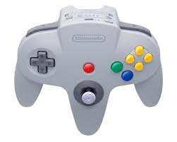
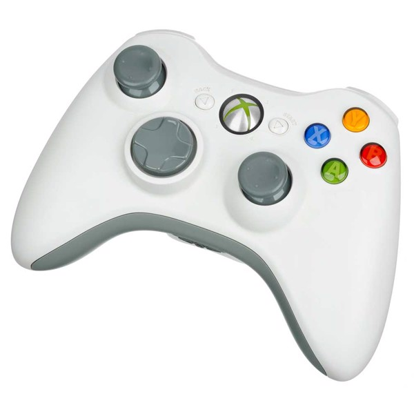
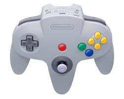
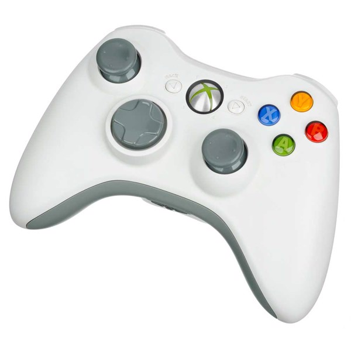

Information about each of these contollers such as there origin, manufacturing and my experice with them and if i have had any. Going from the Atari CX10 Joystick in 1997 to Playstation 4 in 2013.
A Brief History of Game Controllers: Nerdist